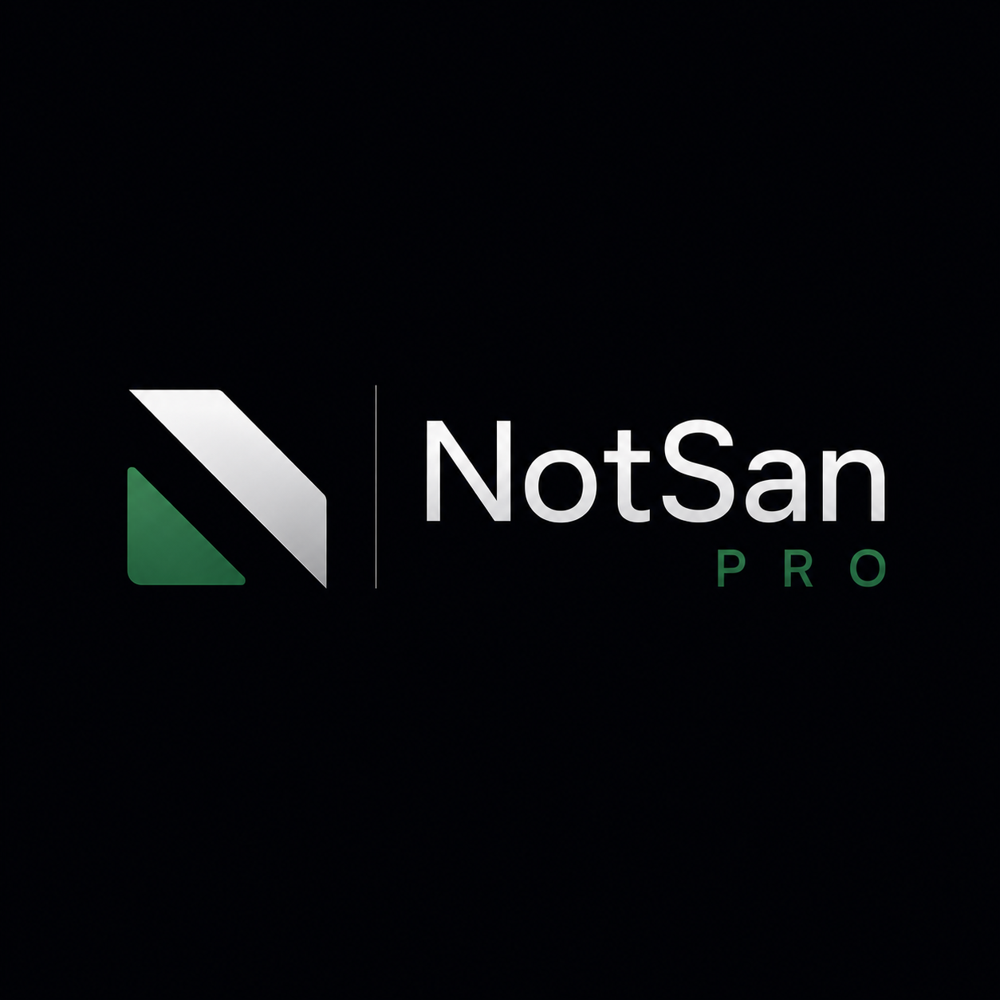

Medikamente
SAA/BPR-Medikamente, Dosierungen, Kontraindikationen, Hinweise und Quellen.

Präklinische Notfallmedizin
NotSan Pro bündelt Medikamente, SAA/BPR, DIVI-Etiketten, Lernkarten und Quiz in einer ruhigen, schnellen und hochwertigen iOS-App.
NotSan Pro wird als professionelles Werkzeug entwickelt: strukturiert, offline nutzbar, medizinisch sauber und mit einem Design, das im Einsatz Ruhe statt Ablenkung vermittelt.
Kernmodule
SAA/BPR-Medikamente, Dosierungen, Kontraindikationen, Hinweise und Quellen.
Algorithmen und Behandlungspfade für den Rettungsdienst – klar strukturiert.
Digitale Darstellung der Spritzenetiketten als Orientierung im Medikamentenbereich.
Wiederholen, festigen und gezielt für Ausbildung und Prüfung lernen.
Prüfungsnahes Lernen mit Fragen zu Medikamenten, Algorithmen und Einsatzwissen.
Die wichtigsten Inhalte sollen ohne Internetverbindung verfügbar sein.
Qualitätsanspruch
Medizinische Inhalte werden auf Basis von SAA/BPR, Fachinformationen, Leitlinien und evidenzbasierter Literatur aufgebaut. Keine erfundenen Dosierungen. Keine Platzhalter.
Projektstatus
NotSan Pro befindet sich aktuell im Aufbau. Ziel ist eine hochwertige iOS-App für Rettungsdienst, Ausbildung und Fortbildung.